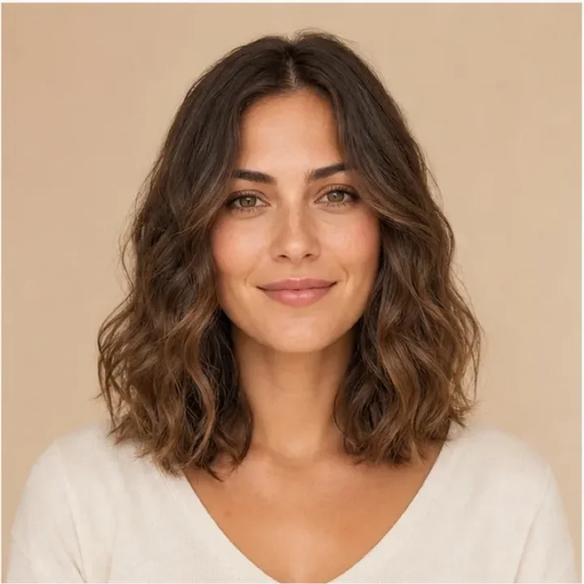
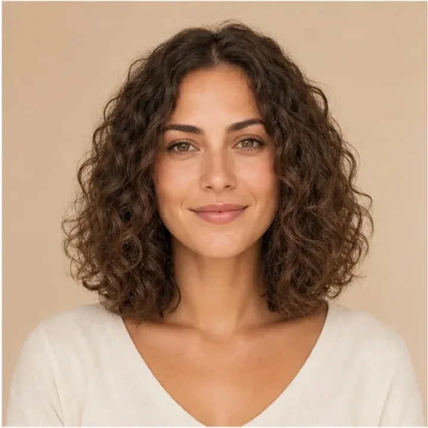
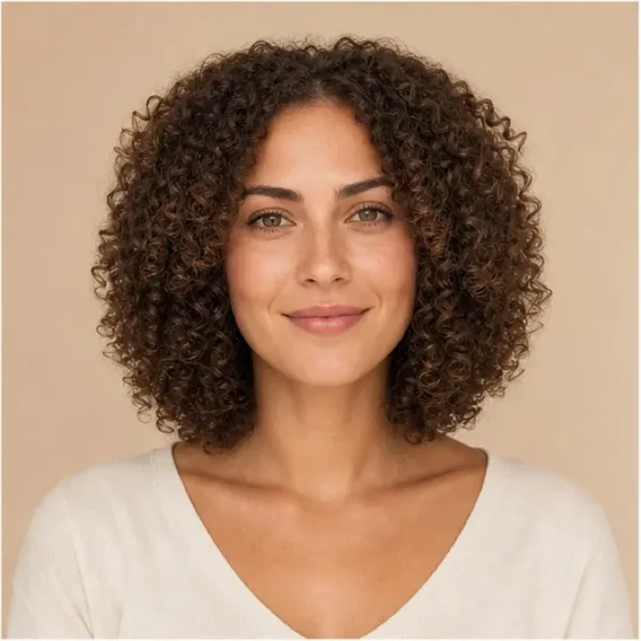

Wähle die natürliche Form deiner Haare, so gut du sie erkennen kannst. Wenn deine Längen chemisch geglättet oder dauergewellt sind, hilft der unbehandelte Ansatz als Orientierung.



Tippe auf eine Antwort, um weiterzumachen.